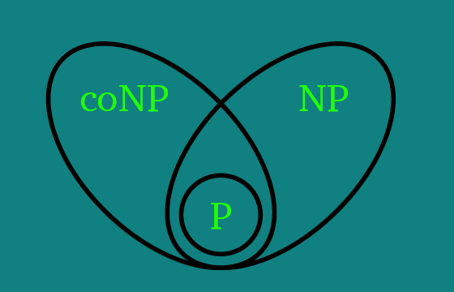
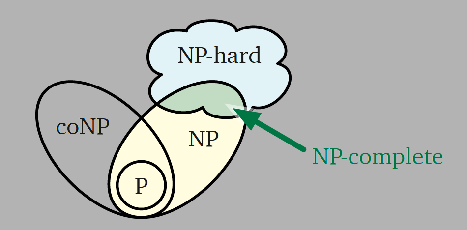

读书笔记之《Algorithms》12
~-~> 2020-11-23
NP-Hardness（NP 一族问题）
decision problem
原来这最后一章只针对决策问题，书中第一个例子是给定二极管电路，计算能最终让灯亮起来的输入。
- P
- NP
- co-NP
- NP-Hard
- NP-Complete
NP 问题，只能快速验证给定的解，不能求出所有正确的解。


书中的典型案例
- circuit satisfiability problem
- formula satisfiability problem
（陆续完善……）
书中习题
（陆续完善……）
同一本书的文章集
- Preface-&-Introduction
- Recursion
- Backtracking
- Dynamic Programming
- Greedy Algorithms
- Basic Graph Algorithms
- Depth-First Search
- Minimum Spanning Trees
- Shortest Paths
- All-Pairs Shortest Paths
- Maximum Flows & Minimum Cuts
- Applications of Flows and Cuts
- 回到开头
⚠️ 请先安装一款邮件软件（部分浏览器可能不支持，请使用设备默认浏览器打开本页面）